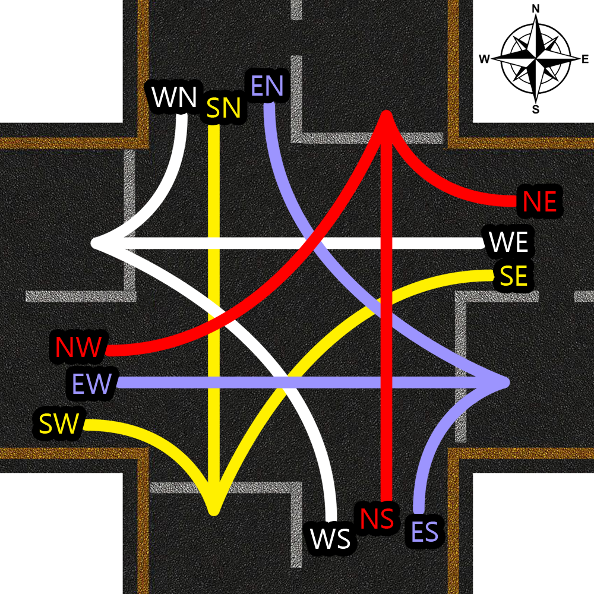

<ion-header>
  <ion-toolbar>
    <br>
    <ion-title>Traffic</ion-title>
    <br>

    <!-- <ion-item lines="none"> -->
    <ion-card>
      <ion-searchbar [(ngModel)]="searchText" (ngModelChange)="get_traffic()" showCancelButton="focus"></ion-searchbar>
      <ion-item lines="none">
        <ion-item class="searchItem" lines="none" (click)="presentPopover($event, 'trafficFilter')">
          <ion-icon slot="start" name="filter-outline">
          </ion-icon>
          <ion-label>
            {{filterBy}}
          </ion-label>
        </ion-item>

        <ion-item class="searchItem" lines="none" (click)="presentPopover($event,'trafficSort')">
          <ion-icon slot="start" name="swap-vertical-outline">
          </ion-icon>
          <ion-label>
            {{SortBy}}
          </ion-label>
        </ion-item>

        <ion-item lines="none">
          <ion-label>Results: ({{results_count}})</ion-label>
        </ion-item>

        <ion-item lines="none">
          <ion-button (click)="export_as()">
            Export
            <ion-icon name="download-outline">

            </ion-icon>
          </ion-button>
        </ion-item>

      </ion-item>
    </ion-card>

    <!-- <ion-item lines="none">
        <ion-text>
          
        </ion-text>
      </ion-item> -->
    <!-- </ion-item> -->


  </ion-toolbar>
</ion-header>


<ion-content>
  <ion-grid>


    <ion-col>
      <ion-card>
        <ion-card-content>
          <table>
            <tr class="header">
              <th>Station No</th>
              <th>Town Name</th>
              <th>LIGHT</th>
              <th>HEAVY</th>
              <th>BIKE</th>
            </tr>
            <tr *ngFor="let traffic of Traffic;">
              <td>{{traffic.station_no}}</td>
              <td>{{traffic.town_name}}</td>
              <td>{{traffic.LIGHT}}</td>
              <td>{{traffic.HEAVY}}</td>
              <td>{{traffic.BIKE}}</td>
              <td>
                <ion-item lines="none">
                  <ion-icon name="ellipsis-vertical-outline" color="medium">
                  </ion-icon>
                </ion-item>
              </td>
            </tr>
          </table>
        </ion-card-content>
      </ion-card>
    </ion-col>
  </ion-grid>
</ion-content>